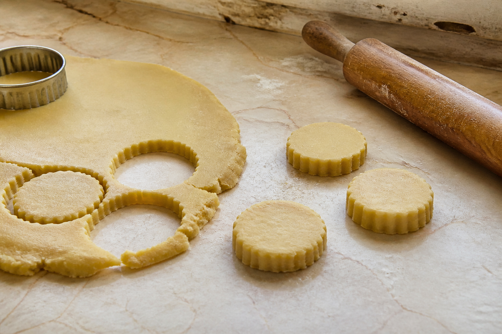
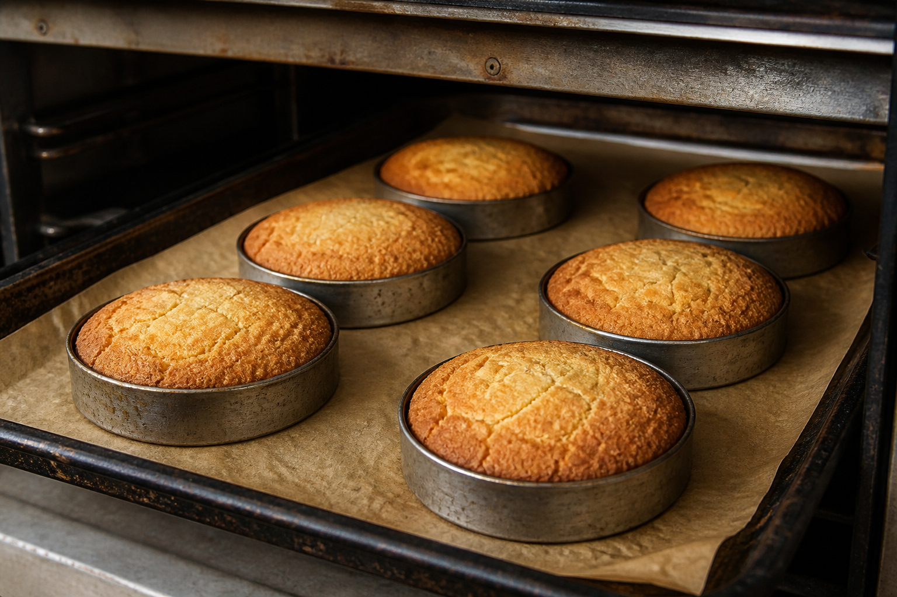
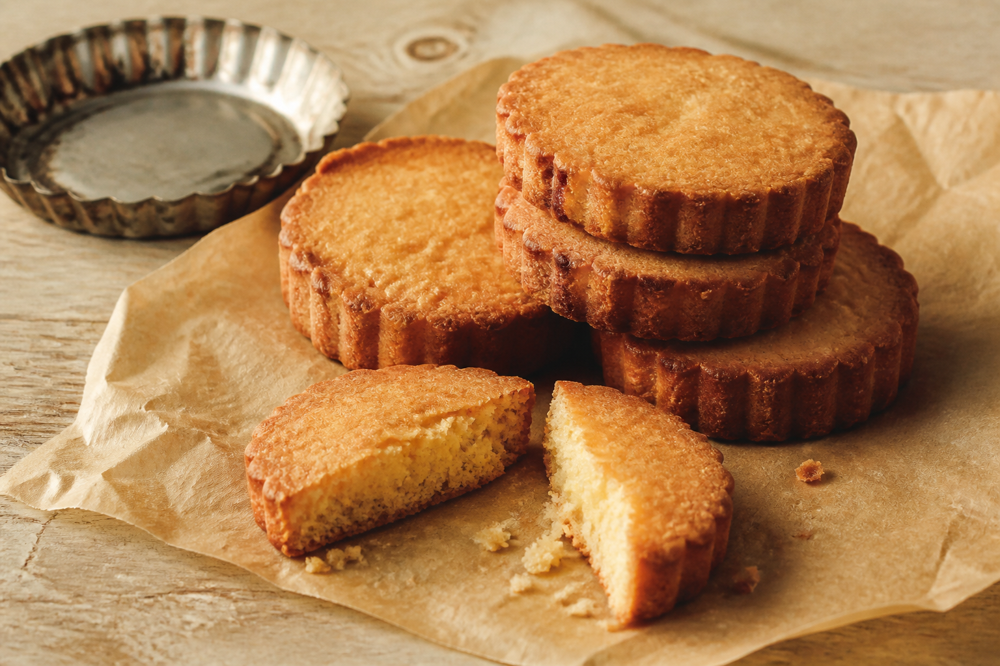

Minimirok · August 2026 · Popular Bakery Journey
No. 08
사블레 브르통을
굽는 법Sablé Breton · Brittany, France
사블레 브르통은 프랑스 브르타뉴 지방의 두꺼운 버터 쿠키다. 버터와 달걀노른자의 풍미가 진하고, 소금이 단맛과 고소함을 또렷하게 만든다. 겉은 바삭하고 속은 포슬포슬하게 부서지는 식감이 핵심이다.



Brittany · butter · salt · heat · sand
Food mechanics · 02
차가운 반죽을 두껍게 자른 뒤 원형 틀 안에서 굽는다. 틀은 반죽이 옆으로 퍼지는 것을 막아 일정한 높이를 만든다.
ring + heat+ cooling
베이킹파우더와 버터의 수분은 속을 가볍게 부풀리고, 열은 가장자리부터 짙은 황금색과 바삭한 껍질을 만든다.
바삭함과 부서짐
오븐에서 꺼낸 직후에는 아직 부드럽지만 한김 식으면 표면이 단단해진다. 가장자리는 바삭하고 속은 모래처럼 잘게 부서진다. 짭조름한 버터 향 뒤로 달걀노른자의 고소함과 구운 설탕의 단맛이 이어진다.